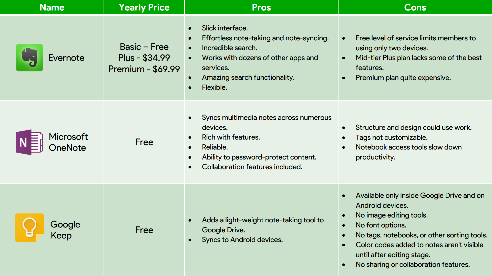
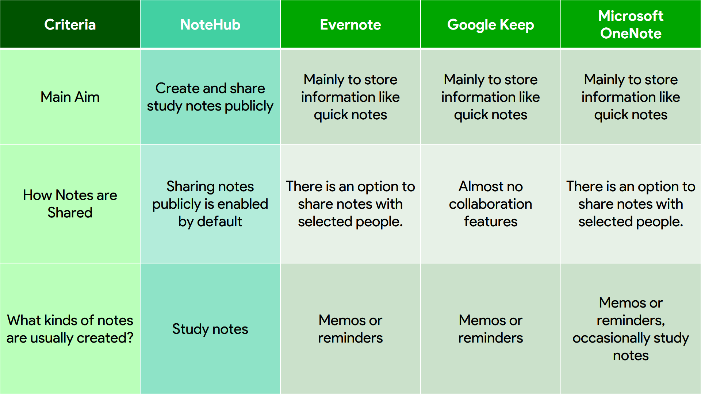

Literature Review
|
Existing Services
There are a few note-sharing apps available to Internet users similar to NoteHub. However, these services have a few weaknesses which lowers their effectiveness to organise notes. Below, a comparison of these services to NoteHub will be made. A comparision between NoteHub and several other note-taking apps / services.

A comparision between the intended purposes of NoteHub and those of several other note-taking apps / services.
These comparisons are based on the following sources:
- Duffy, J. (15 July 2016) Evernote (for Mac). Retrieved from http://www.pcmag.com/article2/0,2817,2392703,00.asp
- Contributor unknown, date unknown. Google Keep. Retrieved from http://sea.pcmag.com/google-keep
- Duffy, J. (28 July 2016) Microsoft OneNote (for Mac). Retrieved from http://www.pcmag.com/article2/0,2817,2455497,00.asp